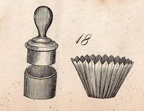
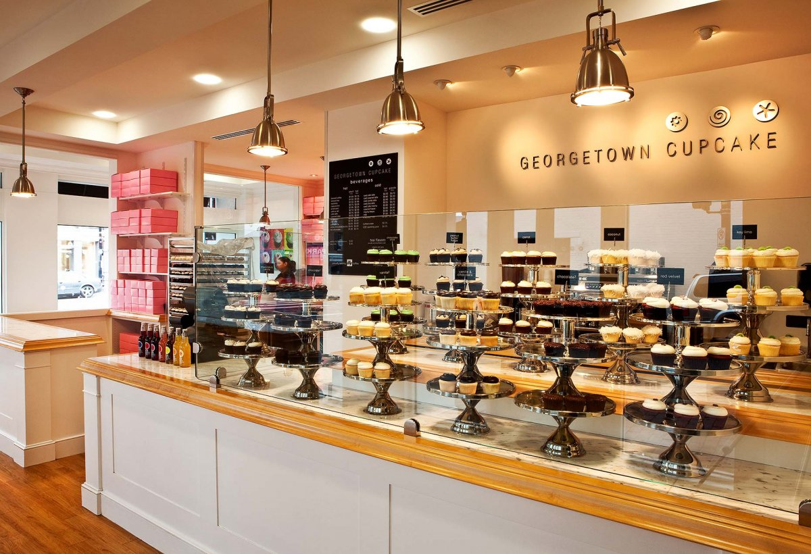
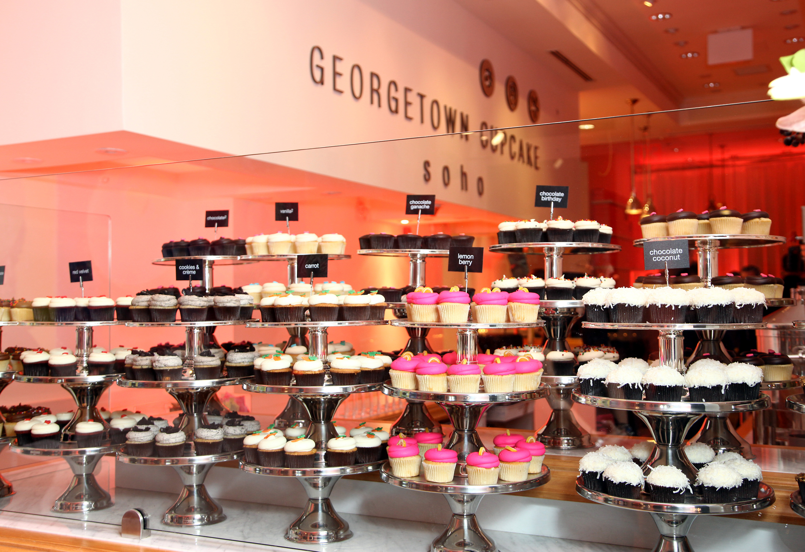
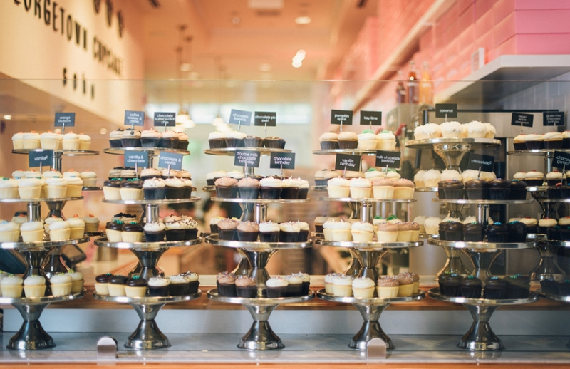

Cupcakes
A Brief Overview and Explanation
A cupcake is a small cake designed to serve one person, which may be baked in a small thin paper or aluminum cup. As with larger cakes, icing and other cake decorations, such as candy, may be applied.
Cupcakes may be topped with frosting or other cake decorations. They may be filled with frosting, fruit, or pastry cream. For bakers making a small number of filled cupcakes, this is usually accomplished by using a spoon or knife to scoop a small hole in the top of the cupcake. Another method is to just insert the pastry bag in the middle of the cupcake. In commercial bakeries, the filling may be injected using a syringe. Elaborately decorated cupcakes may be made for special occasions.
History
The first mention of the cupcake can be traced as far back as 1796, when a recipe notation of "a cake to be baked in small cups" was written in American Cookery by Amelia Simmons. The earliest documentation of the term cupcake was in "Seventy-five Receipts for Pastry, Cakes, and Sweetmeats" in 1828 in Eliza Leslie's Receipts cookbook.
Cupcake Variants
- A cake in a mug is a variant that gained popularity on many internet cooking forums and mailing lists. The technique uses a mug as its cooking vessel and can be done in a microwave oven. The recipe often takes fewer than five minutes to prepare.
- A cake in a jar is another way of making cupcakes. The baker uses a glass jar instead of muffin tins or cupcake liners.
- A butterfly cake is a variant of cupcake, also called fairy cake for its fairy-like "wings".
Pans and Liners
Originally, cupcakes were baked in heavy pottery cups. Some bakers still use individual ramekins, small coffee mugs, large tea cups, or other small ovenproof pottery-type dishes for baking cupcakes.Cupcakes are usually baked in muffin tins. These pans are most often made from metal, with or without a non-stick surface, and generally have six or twelve depressions or "cups". They may also be made from stoneware, silicone rubber, or other materials. A standard size cup is 3 inches (76 mm) in diameter and holds about 4 ounces (110 g), although pans for both miniature and jumbo size cupcakes exist. Specialty pans may offer many different sizes and shapes.
Cupcake Shops
In the early 21st century, a trend for cupcake shops, which are specialized bakeries that sell little or nothing except cupcakes, developed in the United States, playing off of the sense of nostalgia evoked by the cakes. In New York City, cupcake shops like Magnolia Bakery gained publicity in their appearances on popular television shows like HBO's Sex and the City.
Georgetown Cupcake was the first cupcakery to open in Washington, D.C. The cupcake shop gained widespread publicity after the 2010 premier of TLC's DC Cupcakes, a six part reality show about the shop and its owners
  Form
Subscribe to Receive Monthly Newsletters and a New Cupcake Recipe Every Sunday